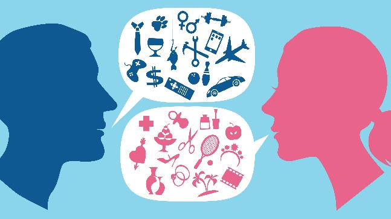

Gender Stereotyping

A gender stereotype is a generalized view or preconception about attributes or characteristics, or the roles that are or ought to be possessed by, or performed by, women and men. A gender stereotype is harmful when it limits women’s and men’s capacity to develop their personal abilities, pursue their professional careers and/or make choices about their lives.
Whether overtly hostile (such as “women are irrational”) or seemingly benign (“women are nurturing”), harmful stereotypes perpetuate inequalities. For example, the traditional view of women as care givers means that child care responsibilities often fall exclusively on women.
Further, gender stereotypes compounded and intersecting with other stereotypes have a disproportionate negative impact on certain groups of women, such as women from minority or indigenous groups, women with disabilities, women from lower caste groups or with lower economic status, migrant women, etc.
Gender stereotyping refers to the practice of ascribing to an individual woman or man specific attributes, characteristics, or roles by reason only of her or his membership in the social group of women or men. Gender stereotyping is wrongful when it results in a violation or violations of human rights and fundamental freedoms.
Wrongful gender stereotyping is a frequent cause of discrimination against women. It is a contributing factor in violations of a vast array of rights such as the right to health, adequate standard of living, education, marriage and family relations, work, freedom of expression, freedom of movement, political participation and representation, effective remedy, and freedom from gender-based violence.
Examples of Gender Stereotypes
We are easily thrown in terms of our interactions with others for whom our brain has not been programmed to stereotype to some degree. This is because stereotyping enables us to make sense of the world – at least sometimes.sometimes Someone who considers themselves “Gender Fluid,” or “Gender non-conforming,” threatens the stereotypes we are familiar with and for that reason can seem is weird and/or threatening because we can’t even stereotype them.
Every day, transgender and gender non-conforming people bear the brunt of social and economic marginalization due to discrimination based on their gender identity or expression. Advocates face this reality regularly working with transgender people who have lost housing, been fired from jobs, experienced mistreatment and violence, or been unable to access the health care they need.
Sixty-three percent of transgender and gender-nonconforming people experience serious acts of discrimination – events that have a major impact on a persons’ quality of life.
How Gender Stereotypes Kill a Woman's Self Confidence

Women make up more than half of the labor force in the United States and earn almost 60 percent of advanced degrees, yet they bring home less pay and fill fewer seats in the C-suite than men, particularly in male-dominated professions like finance and technology. This gender gap is due in part to “occupational sorting,” with men choosing careers that pay higher wages than women do, labor economists say. For example, women represent only 26 percent of US workers employed in computer and math jobs, according to the Department of Labor.
New research identifies one reason women might be shying away from certain professions: They lack confidence in their ability to compete in fields that men are stereotypically believed to perform more strongly in, such as science, math, and technology.Women are also more reluctant to share their ideas in group discussions on these subjects. And even when they have talent—and are actually told they are high-achievers in these subjects—women are more likely than men to shrug off the praise and lowball their own abilities.
Sixty-three percent of transgender and gender-nonconforming people experience serious acts of discrimination – events that have a major impact on a persons’ quality of life.
This weak self-confidence may hold some women back as they count themselves out of pursuing prestigious roles in professions they believe they won’t excel in, despite having the skills to succeed, says Harvard Business School Assistant Professor Katherine B. Coffman.
“Our beliefs about ourselves are important in shaping all kinds of important decisions, such as what colleges we apply to, which career paths we choose, and whether we are willing to contribute ideas in the workplace or try to compete for a promotion,” Coffman says. “If talented women in STEM aren’t confident, they might not even look at those fields in the first place. It’s all about how good we think we are, especially when we ask ourselves, ‘What does it make sense for me to pursue?’”